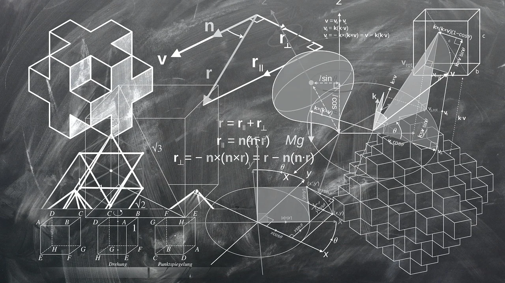

O que funciona, o que só organiza, e o que só dá a sensação de estudar.
Nem toda técnica famosa ensina, e nem todo método de estudo é uma técnica de aprendizagem. Separamos o que a ciência sustenta daquilo que só parece produtivo.
Nem toda técnica famosa ensina, e nem todo método de estudo é uma técnica de aprendizagem. Separamos o que a ciência sustenta daquilo que só parece produtivo.
Existe uma diferença enorme entre sentir que está aprendendo e estar aprendendo de fato. Vários estudos mostram um padrão: as formas de estudar mais populares estão justamente entre as menos eficazes. Você provavelmente usa pelo menos uma delas todo dia.
As técnicas ineficazes têm em comum o fato de serem confortáveis. O desconforto, na verdade, é o sinal de que está funcionando. A pista que une todas elas
Quando alguém pergunta "qual a melhor técnica de estudo?", costuma misturar coisas que servem a propósitos completamente diferentes. Pomodoro, mapas mentais, Cornell, Active Recall: tudo entra no mesmo balaio, como se fossem concorrentes. Não são.
Técnica de aprendizagem é um método cujo objetivo direto é fazer a informação ser compreendida e retida na memória. O teste: se você usar essa técnica, lembra mais e entende melhor na hora que importa?
A Pomodoro (ciclos de 25 minutos) ataca a procrastinação e a dispersão. Não fixa nada na memória, só garante que você sente para estudar. Valiosíssima para quem não consegue começar, mas resolve o "antes", não o aprender.
Cornell e mapas mentais organizam a informação e ajudam a enxergar relações. Apoiam a compreensão, mas, sozinhos, têm efeito modesto sobre a retenção de longo prazo.
Detalhe revelador: a parte mais poderosa do Cornell não é a organização em si, é tampar a coluna de anotações e tentar responder. Isso não é organização, é recuperação ativa disfarçada.

Aqui vale uma hierarquia honesta, organizada pela força da evidência por trás de cada uma. Duas técnicas se destacam, e não é coincidência que as duas exigem esforço de você.
Em vez de reler, você fecha o material e força o cérebro a buscar a informação na memória: escreve tudo que lembra numa folha em branco, responde perguntas, explica em voz alta. Cada vez que recupera algo, fortalece o caminho até aquela informação. É a diferença entre olhar a resposta e ter que produzi-la.
Pegar o estudo e espalhá-lo ao longo de vários dias, em intervalos crescentes (1, 3, 7, 14, 30 dias), em vez de concentrar tudo numa maratona. O esquecimento parcial entre as sessões é justamente o que torna a técnica poderosa: revisitar algo já meio esquecido força a recuperação e deixa a memória mais resistente.
Na prática, essas duas são uma combinação só: recuperar de memória, espalhado no tempo. É a rotina de estudo com mais respaldo científico que existe, e, ironicamente, uma das menos usadas fora de nichos como medicina, direito e concursos.
Desde a curva do esquecimento de Ebbinghaus até as meta-análises recentes que as colocam no topo de tudo o que foi testado. Por que o esforço de recuperar fixa mais que reler? Por que o intervalo entre as revisões importa tanto? Estamos preparando um artigo dedicado só a essas duas.
Em breve · link a publicarExplicar um conceito com suas próprias palavras, como se ensinasse a uma criança, até encontrar a lacuna onde você "trava". Esse ponto de travamento revela o que você ainda não entendeu de verdade. Excelente para compreensão profunda, não para decorar fatos soltos.
Perguntar "por que isso é verdade?" ao estudar um fato (interrogação elaborativa) e misturar tipos diferentes de problema numa mesma sessão em vez de esgotar um assunto antes de passar ao próximo (interleaving). Ambas têm respaldo decente e agregam quando as duas principais já estão na rotina.
O estudo ideal usa as três camadas juntas, cada uma no seu papel. O erro mais comum é parar na camada 2 (entender e organizar) e nunca chegar na 3, que é onde o aprendizado realmente se consolida.
A Pomodoro resolve o "antes": você senta, foca, começa. Sem isso, nenhuma técnica de aprendizagem encontra terreno.
Feynman, mapas mentais e Cornell garantem que você entendeu antes de tentar memorizar. Sem compreensão, decorar é castigo.
Active Recall + Repetição Espaçada fazem o conteúdo grudar de verdade. É onde o aprendizado se consolida, e onde quase ninguém chega.
No CampusGuia a gente separa o que funciona do que só parece funcionar, em estudo, bolsas, estágios e intercâmbio. Receba os guias e editais toda semana na newsletter.